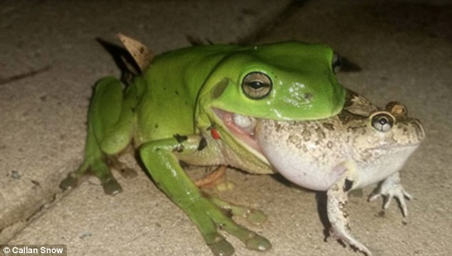

Diet
What Do Frogs Eat? A Fun Guide for Young Explorers!
Hello, young explorers! Today, we're going to hop into the world of frogs and find out what these amazing jumpers like to eat. 🐸
Fascinating Frog Facts!
Did you know that frogs are very special creatures? They live both on land and in water. That's why we call them 'amphibians' - a big word that means 'living in two worlds.'
A Frog's Favorite Foods
- Insects Galore! Frogs love to eat insects like flies, mosquitoes, moths, and even beetles.
- Worms and More Sometimes, frogs find worms or snails to eat.
- Water Treats In the water, they might snack on tiny water creatures and small fish.
How Do Frogs Eat?
Frogs have a superpower – their tongue! They have a long, sticky tongue that shoots out super fast to catch food. It's like having a natural lasso!
Small Frogs, Big Appetites
Even though frogs are small, they can eat a lot. Sometimes, they eat every day, and other times, they eat only a few times a week.
Fun Activity
Draw a picture of a frog and all the different foods it likes to eat. You can show your friends and family what you've learned about frogs!
Remember, Frogs are Friends!
Frogs are an important part of our world. They help control bugs and are a sign of a healthy environment. So, let's love and protect our froggy friends!